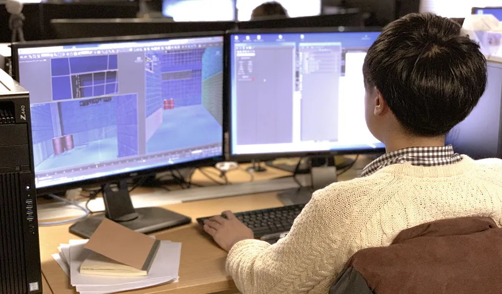
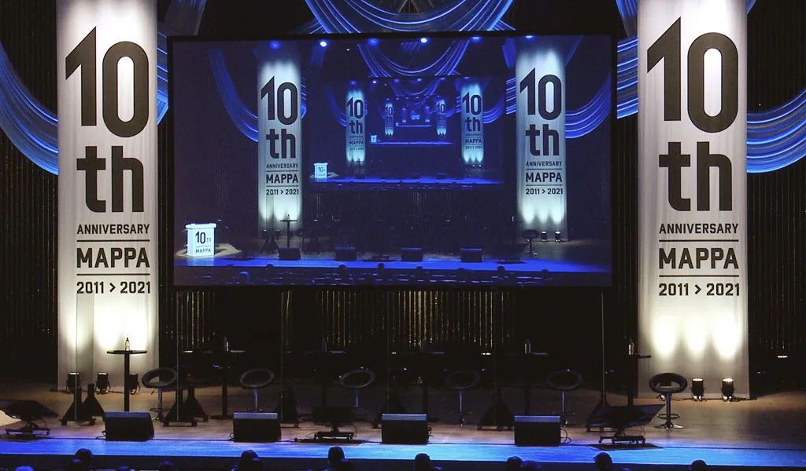
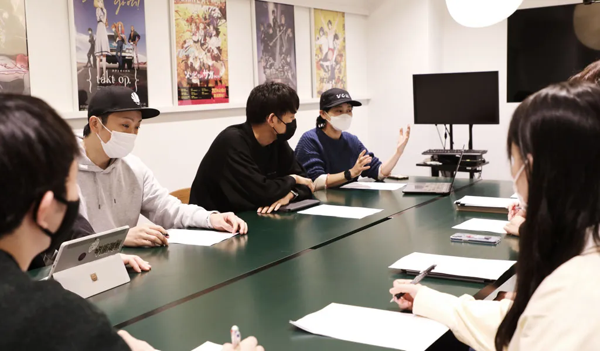
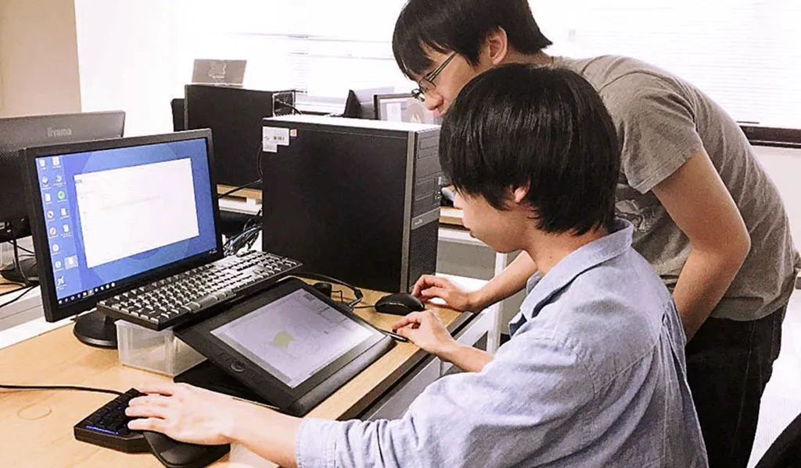
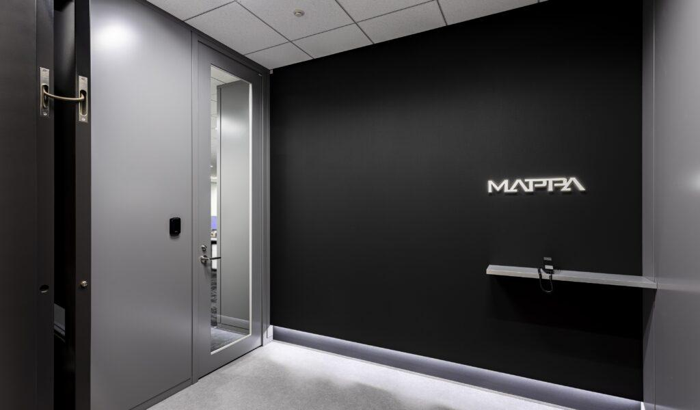

STUDIO DEPARTMENT

CGI division
The CGI Division is the largest department at MAPPA with over 160 members.
In addition to creative artists specialized in the digital domain of processes such as 3DCG, background art, coloring, compositing, and editing, the department includes engineers, production team managers, and directors who together constitute a single, integrated production function.
The division’s strong point is its ability to conduct production internally while exchanging opinions with the director of each project and sharing completed images with creative artists in various departments.
After joining the division, our new members take part in a 2-month training program to learn about company rules and basic tasks. They are later assigned tasks based on the evaluation of their mentors and their own preferences. Under the supervision of their managers, they work in an environment that allows them to have a high level of discretion in their creative work, enabling them to grow while developing their own areas of expertise.
Since each member is asked to provide monthly reports on their own circumstances and opinions, meetings are held as needed to resolve problems and provide career counseling.
Regarding information computer systems, the General Affairs Department and the division's in-house engineers work flexibly to maintain an optimal work environment, including equipment installation and in-house tool development. Exchanging information on the latest technologies as well as Q&A sessions is actively conducted via internal communication channels.
In addition, as for our regional studios, the Osaka studio was established in 2023 following the establishment of the Sendai studio, enabling our staff members to choose a work location that matches their life and work styles.
As a division that aims to scale up further in the future, we strive to become a team that enhances its ability to analyze and improve creative processes based on management strategies and promotes its own value within the company.

2d Animators & Direction Division
The 2D Animators & Directors Division is composed of the “2D Animators Department” and the “Episode Directors Department”, with some creative artists working in both teams depending on their skills.
Using analog and/or digital methods, 2D animators are in charge of drawings in the animation production process. In addition to drawing characters of different styles, we aim to further improve our expressive skills in character performance creation and scene composition.
To further expand our human resources, we are exerting great efforts into providing adequate training for our existing staff members as well as recruiting new personnel. Moreover, since the establishment of our Sendai office in 2018, staff members now have more work location options.
As for Episode Directors department, they are responsible for providing on-site creative direction, starting with the storyboard – the blueprint of the work.
As a career path, staff members start by managing and directing each episode. As they gain more experience, they are promoted to become directors responsible for directing the entire project.
With our staff members in both departments working hard and exploring new approaches to improve the quality of their work, we aim to create a division in which each staff member can become a pillar to produce better animation through deepening their interaction and cooperation with others.

Rights & Licensing Division
The Rights & Licensing Division is divided into the “Production Planning & Development Department”, “Licensing Management Department”, “Business Development Department” and “Sales Operation Department”. It is in charge of developing long-term business globally through participation in production committees for anime titles and by owning their rights.
While producing anime titles, we seek to deliver them to fans through advertising, merchandising, E-commerce (online shopping), events, and overseas distribution to build a sustainable form of business.
Furthermore, we are also working on new and distinctive business initiatives as an animation studio. To make this happen, we actively recruit new graduates and mid-career staff members, as well as provide training and guidance for our current employees through lectures on copyrights, production committees, etc.
As an animation studio, we aspire to deliver high-quality animation globally and be regarded highly as a business entity, through the activities of the Rights & Licensing Division.

Administration Division
The Administration Division is the backbone of the company, ensuring that the studio is running smoothly.
The division integrates functions such as accounting, finance, human resources, general affairs systems, and legal affairs, and aims to create a unique and one-of-a-kind administrative division based on a deep understanding of and respect for animation production. Along with the expansion of the company’s business, we continuously expand our workforce in pursuit of higher quality performance.
Supporting production teams and employees working on the frontline of business, we carry out our daily tasks, taking pride in the fact that we ourselves contribute to the quality of projects. The most rewarding moment for us in the Administration Division is when MAPPA’s works are embraced by audiences worldwide.

Sendai Studio was established in 2018.
We are operating with the aim of becoming a base for the entire sequence of drawing processes, while working on digital in-between animation and painting with such tasks serving as the starting point of the careers of many of our employees. Promoting digital in-between animation instead of the traditional pencil-on-paper method enables us to achieve consistent work from the animation stage all the way to the digital paint process, as well as to facilitate the early entry of animators into actual projects.
As we continue to increase the number of staff members and strengthen their training, we have seen an increase in the number of those working as key animators and animation directors. In addition to our initial goal of completing the digital in-between and painting departments of our in-house production, we are also promoting projects that place the Sendai Studio at the foundation of our production system by expanding the scope of each individual's work.
Our Sendai studio is actively involved in recruitment activities, collaborating academically with various vocational schools and universities in the Tohoku region. We intend to actively hire both new graduates and experienced employees, and to function as a receptacle for young people who aim to pursue careers in the Animation field, while also improving the education level and strengthening our organizational structure.

Osaka Studio was established in 2023 as a satellite office of the CGI Division. The studio is primarily staffed by the 3DCG section artists who mainly rely on using 3dsMax and Blender as their main tools. Transcending physical distances, our new graduates and mid-career employees have collaborated with their peers from HQ, showing the same level of growth as those who are working in our Tokyo studio.
Located in the center of Osaka, it is easy for our artists to commute to the studio from suburban prefectures, making it an attractive place to be at the forefront of the anime production while residing in the Kansai region. We actively recruit local staff, and regularly hold seminars, internships, and company tours with various vocational schools and universities in Kansai in accordance with our commitment to disseminate industry information and discover young talent.
In the future, we are considering having Art staff, 2D Animators, Directors and local staff join the Osaka studio, with the aim of creating a functional production equivalent to that of Tokyo.
COMPANY PROFILE
| Company Name |
MAPPA Co.LTD |
| Estabilished |
06/14/2011 |
| Management |
President : Manabu Otsuka
Chairman of the Board of Directors : Masao Maruyama
Executive Vice President : Hiroya Hasegawa
Board Member : Yusuke Tannawa
Board Member : Shuhei Yabuta
Board Member : Kosuke Hosokai
External Board Member : Yuichi Fukushima
Executive Officer : Keisuke Seshimo
Executive Officer : Motoi Okuno
Chief Rights Officer : Eiji Matsuo |
| Business Outline |
With a focus on the production of TV animation, we plan and produce animated content across all genres and in a variety of other formats such as movies, commercials, and online videos. We also make use of the rights that we own for certain IPs as we operate our licensing business both domestically and overseas. |
| Number of Employees |
467 |